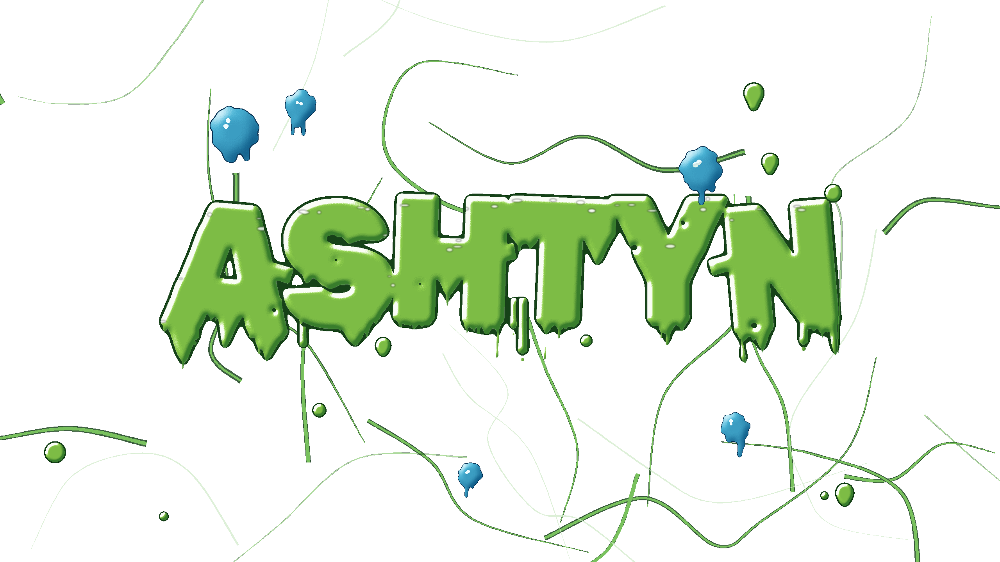
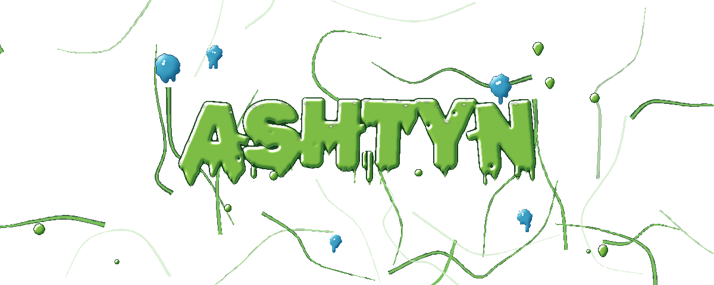
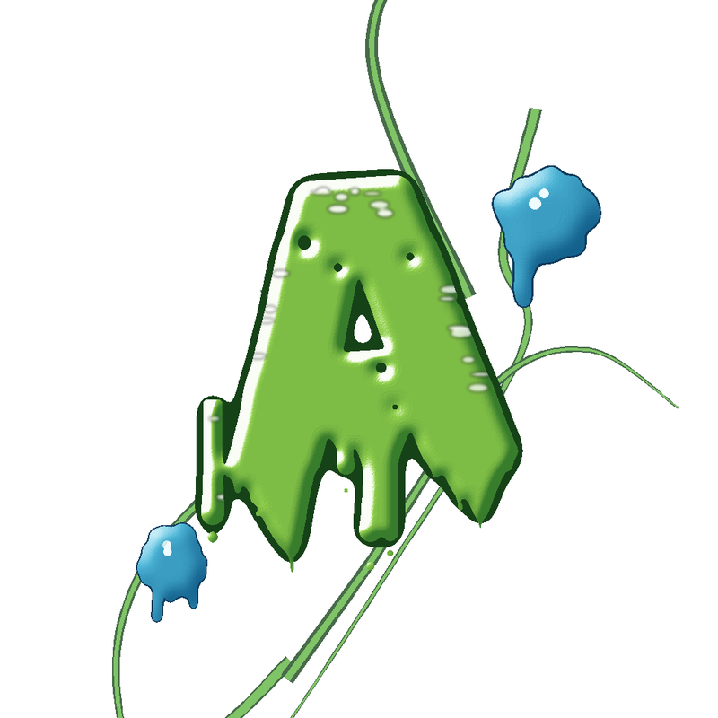

Green, wet, and growing over everything. The name is set in real display letterforms — not drawn by me — then inflated, glossed, and dropped into a habitat of vines, blue slime islands and stray droplets. White page, one organism.
00 — what changed
The last pass failed because I was drawing letters. Lettering is the one part of this that needs a designer's hand, so the wordmark is now set in Rubik Wet Paint — a display face whose forms already carry the bulges and drips — and everything around it is generated.
That division matters: the typeface supplies the character, the code supplies the material. If the word ever changes, it is retyped, not redrawn.
01 — the system
Chunky, condensed, dripping at the baseline. Stretched 12% vertically so it stands taller than the face's default.
A blurred copy of the silhouette acts as a height field; its gradient becomes a surface normal, lit from the top left. That is the whole plastic gloss.
Tapered vines, blue slime islands with their own drips, droplets thrown off the mass. All generated, all on the same white page.
02 — the tag

03 — palette
04 — other surfaces


The avatar drops to a single A and one blue island. At 32 px the letterform and the green are all that survive — the gloss turns into noise, so it is dialled back rather than removed.
The thumbnail template still runs the flat iris a tag from two directions ago. It does not match this set yet, and at 320 px a slime wordmark will not survive anyway — thumbnails need their own treatment.
05 — files
| File | Size | Where |
|---|---|---|
| youtube-banner-slime-2560x1440.png | 2560 × 1440 | channel banner |
| twitch-banner-slime-1200x480.png | 1200 × 480 | twitch panel |
| profile-slime-1024 / 800 / 256.png | square | avatar, all platforms |
| watermark-150.png · -white.png | 150 | video corner mark |
| logo-transparent / white / black | 1024 | flat knock-outs |
| export/alt-ink · alt-cyber · alt-graff | — | earlier directions, kept |
Rebuild: python brand/src/build_slime.py (about 5s). Type: Rubik Wet Paint, Google Fonts, SIL Open Font License 1.1 — free for commercial use, no attribution required.
06 — open
It is a generated interpretation of the reference, not a match for it. The shading is soft where that artwork is crisp vector; the drips come from a typeface rather than being drawn per letter; and the vines are noise-driven rather than composed. If the exact look matters, it needs an illustrator.